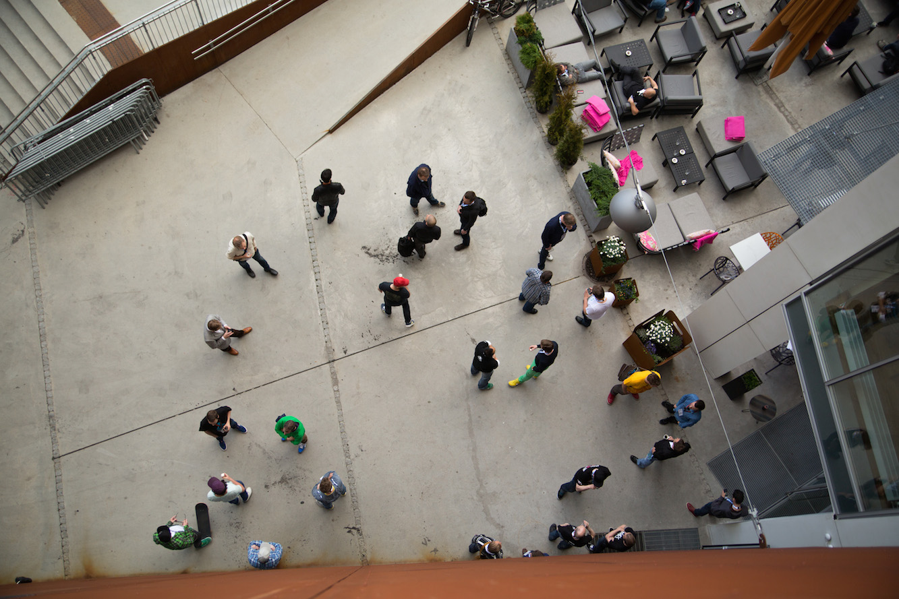
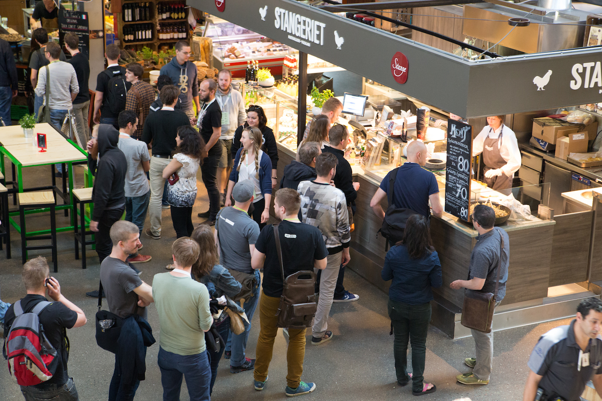

Everything related to the conference happens within a 200m radius of the venue: the pre-party, the conference, lunch, the conference party and Open Mic Night.
Finding the venue and getting around the city? See our Oslo Survival Guide.
Vulkan Arena, located in the newly constructed area, Vulkan, at Grünerløkka. The venue has brand new and modern facilities and is one of Norway’s most energy efficient buildings with top notch air conditioning and high speed fiber internets.
The venue is wheelchair accessible. The entrance is on the ground floor, there is an elevator and HC-toilet. If you have any questions about practicalities – or if there is anything we can do to make your attendance possible, please do not hesitate to shoot us an email.
Mathallen is Oslo’s first gourmet food market and located about 20 meters from the venue. There is a wide selection of gourmet food stores, restaurants, excellent coffee and beer shops. All food served at the conference will be provided from these establishments.
You can travel to Norway cheaply (No, Really)! Norwegian and SAS both have lower priced tickets on sale which you can get if you make reservations early. Norwegian tends to be the cheapest option; check out their calendar app for cheapest flights in the period (this URL links to flights from London to Oslo). SAS generally offers a more comfortable flight, but Norwegian offers free in-flight Wi-fi.
Whatever you do, don’t grab a taxi from the
airport. It's a really long and expensive ride. A
cheap way of getting to Oslo is by the airport express bus (either Nor-Way Bussexpress or SAS Flybussen, but the
airport express train (called Flytoget in Norwegian) is also quite reasonable, and is by
far the most convenient. The cheapest options is to take the local train service NSB, which is about 90 NOKs. It might not be as fast as the other options, but it is the cheapest.
You'll want to get off the train at
Oslo Central Station, where you'll find taxis and public
transport aplenty. If you're staying at the conference
hotel, see the guide for getting to the venue above.
The address to the venue is Maridalsveien 13-17.
There are several great hotels within walking distance of
the venue. Oslo can be a busy town, so we recommend booking
your room early!
If you want a better feel of how it's like to live in Oslo, you can checkout some of the available apartments on AirBNB close to the venue.
Scandic Hotel Vulkan is a modern hotel right next door to the venue. By staying here, your will be able to walk in your slippers from your room and into the venue.
We're also happy that there is a cheaper hotel at the premises, just 20-30m from the venue.
One of the coolest new hotels in the city, similar to the Yotel concept in other cities. It's located right in the heart of rock'n roll Oslo and still within walking distance of the venue. Free Wi-Fi, naturally.
If your company’s paying anyway why not splurge? Unlike most other things in Norway, hotels in Oslo are surprisingly cheap. You can stay at the 5 star Radisson BLU Plaza, located in the heart of the city, right next to all the public transport you’ll need to get to the venue, for a lot less than you’d expect. If you want to go all out on the expense account, though, there’s always Hotel Continental. We expect that if you can afford to stay there, you won't mind having to get to the venue by taxi.